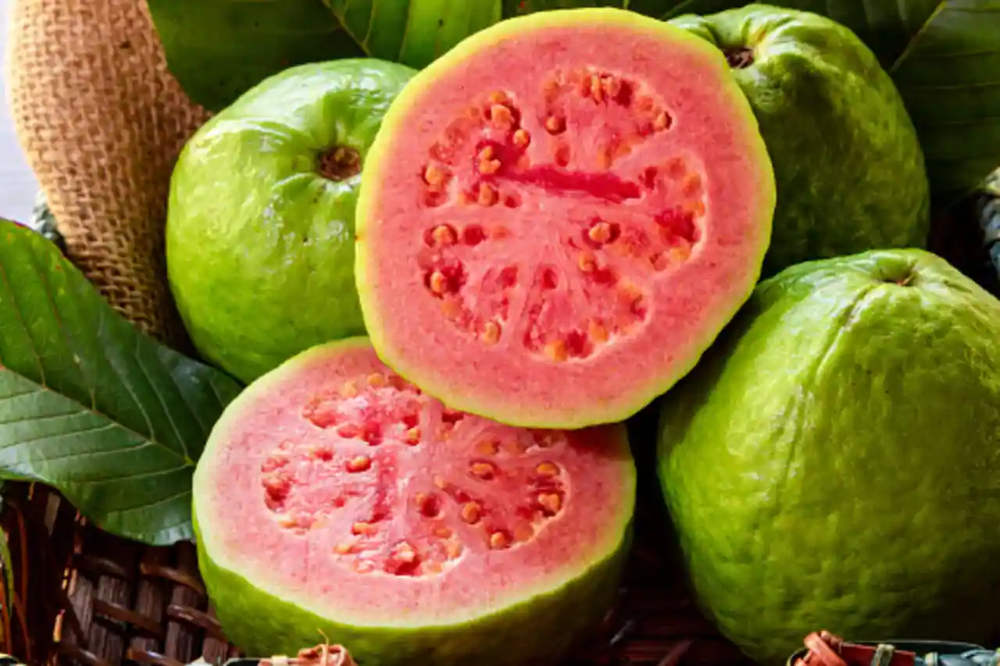

Allahabad Surkha Guava
इलाहाबादी सुर्खा अमरूद


The Allahabad Surkha guava, also rendered Allahabadi Surkha and locally known as sebiya for its apple-like appearance, traces its origin to a chance seedling discovered in the village of Abubakkarpur in the Allahabad region of what is now Uttar Pradesh. Unlike cultivated varieties developed through deliberate breeding programmes, it arose spontaneously and was propagated by local growers once its unusual purplish-pink skin and deep pink flesh set it apart from the common white-fleshed guavas of the region. The name Surkha, derived from the Hindi word for red, directly references this distinguishing colouration, while the affectionate term sebiya draws a comparison to the apple owing to the fruit's rounded, slightly depressed shape at both ends.
As a horticultural product, the Allahabad Surkha occupies a significant place among India's regionally distinctive fruit varieties, valued both for its unusual biology and its economic role in the Doaba tract between the Ganga and Yamuna rivers. It was among the earliest agricultural products from Uttar Pradesh to receive a Geographical Indication tag, registered under Application No. 50 of the Geographical Indications of Goods (Registration and Protection) Act, 1999, with the tag granted in 2007-08. This recognition formally linked the fruit's distinctive deep pink flesh and sweet, aromatic flavour to the specific agro-climatic and alluvial soil conditions of the Kaushambi and Kaurihar tracts near Prayagraj, affording local cultivators a measure of legal protection against the marketing of guavas from elsewhere under the Allahabad Surkha name.
Botanically, the variety is characterised by a thin, purplish-pink to apple-red skin enclosing thick, sweet-smelling flesh that ranges from whitish to a pronounced deep pink, with comparatively few and notably soft seeds compared to other guava cultivars. Fruits are typically large, averaging around 200 grams against the 55 to 65 grams typical of common guava varieties, and are slightly depressed at both ends, giving the apple-like silhouette from which its popular name derives. Cultivation has historically spanned roughly a thousand hectares across blocks such as Sirathu, Kurra, Moratganj, Chayal, and Newada in Kaushambi district, with harvesting concentrated in the cooler months when the fruit's colour and sweetness are most pronounced, and tens of tonnes dispatched daily during peak season to markets in Bihar, Jharkhand, and West Bengal.
The crop has faced recurring agricultural challenges that have tested its continued viability, most notably a wilting disease locally called ukta rog, which affects saplings that take four to five years to mature before bearing fruit, often causing them to dry out before reaching full productivity. Heavier-than-usual monsoon seasons, combined with fruit fly infestation and fungal disease, have further reduced yields in recent years, and reporting from 2022 noted that the area under cultivation in Kaushambi had contracted to around 500 hectares amid land fragmentation and declining profitability for smallholder farmers who once relied heavily on the crop for seasonal income.
In response to this decline, the Uttar Pradesh state horticulture department has introduced support measures including subsidised sapling distribution and periodic farmer training programmes aimed at reviving cultivation practices and disease management in the affected blocks. Local agricultural extension offices in Kaushambi continue to monitor the crop alongside growers' associations that trade under the protected Allahabad Surkha name, distinguishing it in mandis from unrelated guava stock grown outside the designated Doaba belt. The fruit remains tied closely to Prayagraj's identity as a horticultural centre, with its GI status now functioning less as a historical footnote than as an active tool local officials and farmers invoke to keep the variety commercially distinct and, they hope, commercially recoverable.
| Date of Introduction | January 15, 2025 |
|---|---|
| Address | Senior Postmaster, |
| Prayagraj HO, | |
| Prayagraj (dt.), Uttar Pradesh - 211001. |